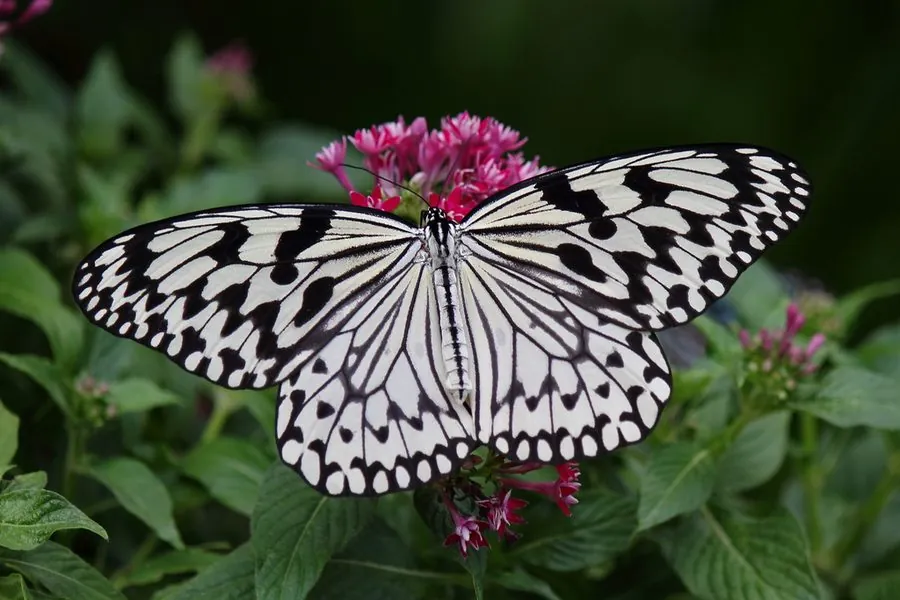

昆虫 · 动物界
大帛斑蝶 Idea leuconoe

翅面白色带黑色脉纹和斑点的大型斑蝶，飞行缓慢如纸鸢，是东南亚和我国南方著名的观赏蝴蝶，也是蝴蝶园的常客。
- 分类
- 门节肢动物门纲昆虫纲目鳞翅目科蛱蝶科属帛斑蝶属
- 栖息环境
- 海岸林、山地林缘、花园与蝴蝶园，萝藦科植物附近
- 地理分布
- 中国南方、东南亚和太平洋岛屿
- 保护级别
- 暂无评估
物种志
大帛斑蝶翅展约 10–13 cm，翅面白色或半透明，翅脉黑色清晰，边缘和翅面散布黑色斑点，整体看起来像一张画着黑线的白纸。它是斑蝶中体型较大的种类，飞行缓慢，姿态轻盈，像一只纸鸢在空中飘。
它生活在热带和亚热带的海岸林、山地林缘和花园，成虫喜欢访花吸蜜，也常在水边吸水。雌蝶把卵产在萝藦科植物上，幼虫取食叶片并储存毒素，因此成虫有毒，白黑相间的体色具有警戒作用。大帛斑蝶分布于中国南方、东南亚和太平洋岛屿，是蝴蝶园和生态旅游中常见的观赏蝶种，人工饲养技术已经比较成熟。它的蛹为金黄色，带有黑色斑点，挂在寄主植物的枝叶间，十分醒目。
形态与习性
- 食性幼虫取食萝藦科植物；成虫吸食花蜜
- 翅展约 10–13 cm
- 识别翅面白色，翅脉黑色，散布黑色斑点
- 习性飞行缓慢轻盈，像纸鸢飘动
- 分布中国南方、东南亚和太平洋岛屿
趣味知识
- 大帛斑蝶飞行缓慢，姿态轻盈，因此被叫作纸鸢斑蝶。
- 它的幼虫取食萝藦科植物，把毒素储存在体内防身。
- 大帛斑蝶是蝴蝶园里常见的观赏蝶种，人工饲养技术成熟。